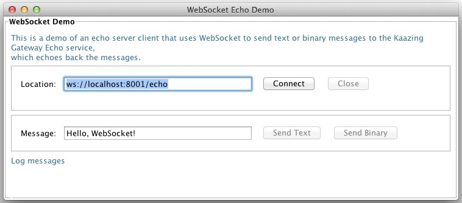

Interact with Kaazing Gateway Using the WebSocket API
If you are looking for Android development information, see the Kaazing Android SDK topics in the table of contents.
This procedure describes how you can use the WebSocket API provided by the Kaazing Java WebSocket client library in Java. This API allows you to take advantage of the WebSocket standard as described in the HTML5 specification. For example, you can create a stand-alone Java application that uses the Java HTML5 Communications client library to interact directly with a back-end server. The support for WebSocket is provided by the WebSocket class and its supporting classes.
There are two examples in this topic to show you how to use the WebSocket API in a Java client:
To Use the WebSocket API in Java: The first example is a brief, general example of how your client can invoke the interfaces sequentially. The relevant interface will block the next interface until it has been successful or it will throw an exception.
Build the Java API Client Demo: The second example provides the steps to create a standalone Java client, including the steps needed to compile and run the interface in Eclipse.
Refer to the Java API documentation for a complete description of all the available methods.
Create a WebSocket object and connect to a server:
wsFactory = WebSocketFactory.createWebSocketFactory();
ws = wsFactory.createWebSocket(URI.create("ws://example.com:8001/path"));
ws.connect(); // This will block or throw an exception if failed.
To send messages, add a WebSocketMessageWriter object:
WebSocketMessageWriter writer = ws.getMessageWriter();
String text = "Hello WebSocket!";
writer.writeText(text); // Send text message
To receive or consume messages, add WebSocket and WebSocketMessageReader objects:
wsFactory = WebSocketFactory.createWebSocketFactory();
ws = wsFactory.createWebSocket(URI.create("ws://example.com:8001/path"));
ws.connect(); // This will block or throw an exception if failed.
WebSocketMessageReader reader = ws.getMessageReader();
WebSocketMessageType type = null; // Block till a message arrives
// Loop till the connection goes away
while ((type = reader.next()) != WebSocketMessageType.EOS) {
switch (type) { // Handle both text and binary messages
case TEXT:
CharSequence text = reader.getText();
log("RECEIVED TEXT MESSAGE: " + text.toString());
break;
case BINARY:
ByteBuffer buffer = reader.getBinary();
log("RECEIVED BINARY MESSAGE: " + getHexDump(buffer));
break;
}
}
Note: The WebSocket connection is created for both the send and receive functions (ws.connect()). These examples are used because most clients will either send or receive messages. If your client both sends and receives messages, you would only need to create a single WebSocket connection.
Here is an example using a for loop to alternate between text and binary messages, and the code is placed within try catch blocks:
try {
// Create a new WebSocket object
wsFactory = WebSocketFactory.createWebSocketFactory();
ws = wsFactory.createWebSocket(URI.create("ws://example.com:8001/path"));
ws.connect(); // This will block or throw an exception if failed.
/* Use the WebSocketMessageWriter class method getMessageWriter()
to send text and binary messages */
WebSocketMessageWriter writer = ws.getMessageWriter();
// Send messages using a for loop to alternate between text and binary messages
for (int i = 0; i < 100; i++) {
String text = "Hello WebSocket - " + i;
// For even numbered loops, send text
if (( i %2) == 0) {
writer.writeText(text); // Send text message
}
else {
// For odd numbered loops, send binary
ByteBuffer buffer = ByteBuffer.wrap(text.getBytes());
writer.writeBinary(buffer); // Send binary message
}
}
ws.close();
}
catch (Exception ex) {
ex.printStackTrace();
}
Here is how to receive messages on the consumer side using a while loop and switch statement:
try {
// Create a new WebSocket object
wsFactory = WebSocketFactory.createWebSocketFactory();
ws = wsFactory.createWebSocket(URI.create("ws://example.com:8001/path"));
ws.connect(); // This will block or throw an exception if failed.
// Use the getMessageReader() method
WebSocketMessageReader reader = ws.getMessageReader();
WebSocketMessageType type = null; // Block until a message arrives
while ((type = reader.next()) != WebSocketMessageType.EOS) { // Loop until the connection is closed
switch (type) {
// Run if type is TEXT
case TEXT:
CharSequence text = reader.getText();
log("RECEIVED TEXT MESSAGE: " + text.toString());
break;
// Run if type is BINARY
case BINARY:
ByteBuffer buffer = reader.getBinary();
log("RECEIVED BINARY MESSAGE: " + getHexDump(data)); // see getHexDump() below
break;
}
}
ws.close();
}
catch (Exception ex){
ex.printStackTrace();
}
private String getHexDump(ByteBuffer buf) {
if (buf.position() == buf.limit()) {
return "empty";
}
StringBuilder hexDump = new StringBuilder();
for (int i = buf.position(); i < buf.limit(); i++) {
hexDump.append(Integer.toHexString(buf.get(i)&0xFF)).append(' ');
}
return hexDump.toString();
}
WebSocket and WsURLConnection
The Kaazing Gateway Java WebSocket API offers two options for creating and using WebSocket connections to enable developers to leverage their java.net Socket or URL experience:
WebSocket - this class and its methods are provided for developers familiar with the Socket class in the java.net package. It implements a socket for stream-based interprocess communication over the Web.
WsURLConnection - this class is an extension of the URLConnection class in the java.net package. It defines a network connection to an object specified by a URL. WsURLConnection adds WebSocket support to URLConnection, allowing you to create, connect and use WebSocket connections in addition to the default URLConnection subclasses HttpURLConnection and JarURLConnection. You can use all of the methods in URLConnection and the additional methods included in the WsURLConnection extension.
WebSocket Class
The WebSocket class is demonstrated in the Build the Java API Client Demo example, but there are some additional elements to be aware of such as methods for text and/or binary WebSocket messages. These methods are described in Methods for Text and Binary Messages.
WsURLConnection
The WsURLConnection class is provided for developers accustomed to creating an URLConnection object and then using java.io.InputStream and java.io.OutputStream classes from java.io to receive and send data. The WsURLConnection extends URLConnection to enable you to use WebSocket-specific features and provide bidirectional communication.
The following example demonstrates how WsURLConnection enables you to create a URLConnection object for a WebSocket URL:
There are two important things to note in this example:
This example uses the URLFactory class which enables you to instantiate URL objects that support custom protocols and schemes, such as the WebSocket protocol’s ws:// and wss://. java.net.URL has native support for http, https, ftp, file, and jar protocols only.
The URLConnection object created in the example is an instance of the WsURLConnection class. Since getInputStream() and getOutputStream() methods are available on URLConnection, there was no need to downcast URLConnection to WsURLConnection. However, if you need to access methods that are not available on URLConnection, but are only available on WsURLConnection, you can downcast the urlConn object in the example and then invoke getMessageReader():
With WsURLConnection and URLFactory, you can continue to create URLConnection objects as you have previously and simply use WebSocket to take advantage of additional methods provided by WsURLConnection.
URLFactory
The URLFactory class is included to support custom protocols and schemes not supported by java.net.URL. Namely, the WebSocket protocol’s ws:// and wss:// schemes. java.net.URL supports http, https, ftp, file, and jar protocols only and the java.net.URLStreamHandlerFactory class registration is not extensible. After importing the URLFactory class, one of the createURL() methods is used to create a WebSocket URL object from either:
The String representation, by parsing the given specification within a specified context.
A specified protocol name, host name, and file name.
A specified protocol name, host name, port number, and file name.
For more information about the URLFactory class, see the Kaazing Gateway Java WebSocket API.
Setting and Overriding Defaults on the WebSocketFactory
You can set a default redirect-policy on the WebSocketFactory. All the WebSockets created using that factory automatically inherit the default. You can then override the defaults on an individual WebSocket, if desired. Unlike the HttpURLConnection in the Java SDK that uses the boolean InstanceFollowRedirects method to specify whether the WebSocket follows redirects automatically, the Kaazing Gateway Java WebSocket API also provides the following options:
Option
Description
NEVER
Do not follow HTTP redirects.
ALWAYS
Follow the HTTP redirect requests always, regardless of the origin, domain, etc.
SAME_ORIGIN
Follow the HTTP redirect only if the origin of the redirect request matches. This implies that both the scheme/protocol and the authority between the current and the redirect URIs should match. The port number should also be the same between the two URIs.
SAME_DOMAIN
Follow HTTP redirect only if the domain of the redirect request matches the domain of the current request. For example, URIs with identical domains would be ws://production.example.com:8001 and ws://production.example.com:8002.
PEER_DOMAIN
Follow the HTTP redirect only if the redirected request is for a peer-domain. For example, the domain in the URI ws://sales.example.com:8001 is a peer of the domain in the URI ws://marketing.example.com:8002.
SUB_DOMAIN
Follow the HTTP redirect only if the request is for sub-domain. For example, the domain in the URI ws://benefits.hr.example.com:8002 is a sub-domain of the domain in the URI ws://hr.example.com:8001.
You can set the default redirect option on the WebSocket Factory using the setDefaultRedirectPolicy() method and then override it on a WebSocket connection using the setRedirectPolicy() method.
Both the WebSocket and WsURLConnection classes offer methods to suit the data types your client will handle.
Text and Binary Clients
Clients using both text and binary messages can use the getMessageReader() and getMessageWriter() methods, available in both the WebSocket and WsURLConnection classes. These methods receive binary and text messages based on the WebSocketMessageType class. The WebSocketMessageType class represents the types of messages that are received by WebSocketMessageReader. There are three types: TEXT, BINARY, and EOS for end–of–stream. For receiving messages, you can use a switch block for the different message types:
Thread messageReceivingThread = new Thread() {
public void run() {
WebSocketMessageType type = null;
try {
WebSocketMessageReader reader = webSocket.getMessageReader();
while ((type = reader.next()) != WebSocketMessageType.EOS) {
switch (type) {
case BINARY:
ByteBuffer data = reader.getBinary();
log("RESPONSE:" + getHexDump(data));
break;
case TEXT:
CharSequence text = reader.getText();
log("RESPONSE:" + text.toString());
break;
}
}
webSocket.close()
}
catch (Exception ex) {
log("Exception: " + ex.getMessage());
}
}
};
Note: In UI-based Java clients, receiving messages should be done on a separate thread to avoid blocking the java.awt EventDispatchThread. Review the example in Build the Java API Client Demo to see a demonstration.
Text-only Clients
Text-only clients can use the getReader() and getWriter() methods, available in both the WebSocket and WsURLConnection classes. If either method is used to receive binary messages, or the methods are invoked before a connection is made, then an IOException is thrown.
Binary-only Clients and I/O Streams
Both WebSocket and WsURLConnection classes support APIs that enable use the use of byte-based data streams as they define getInputStream() and getOutputStream() methods. getInputStream() is used for receiving binary streams and getOutputStream() is used to send binary streams. If either method is used to receive text messages, or the methods are invoked before a connection is made, then an IOException is thrown. Once the connection is closed, a new InputStream or OutputStream must be obtained using the getInputStream() and OutputStream() methods after the connection has been established. Using the old InputStream or OutputStream will result in IOException.
Build a Java WebSocket API Client Demo
The following procedure walks through the steps of creating the out of the box Java WebSocket demo that is included with the Kaazing Gateway bundle. The demo code displays how to use the Java WebSocket API to create a client that creates a WebSocket connection with the Gateway, sends and receives text and binary messages, and includes a UI.
In this procedure you will do the following:
Set up a Java project in Eclipse.
Import the Kaazing Gateway Java libraries.
Create the package and class for the Java client.
Add the import statements for the common Java classes.
Add the import statements for the Kaazing Gateway Java library classes.
Add objects for the UI elements, including labels and buttons.
Add the WebSocket and WebSocketFactory objects.
Add the event listeners.
Start the Gateway.
Test your new client.
For information about the Kaazing Gateway Java WebSocket API, see Java WebSocket API.
The following procedure uses the Eclipse IDE. You can download Eclipse from www.eclipse.org. Java Developer Kit (JDK) or Java Runtime Environment (JRE) Java 7 or higher from Oracle is required also.
Set up a Java project in Eclipse.
Create a new Java Project in Eclipse. From the File menu, click New and then Java Project. You can name the project whatever you like. This procedure uses the project name JavaDemo.
Right-click the new project, and click Properties.
Import the Kaazing Gateway Java WebSocket libraries.
In the Properties dialog, click Java Build Path, click the Libraries tab, and click Add External JARs.
Locate and select the Kaazing Java WebSocket library. The libraries are located in the lib folder of the Kaazing Java JMS Client SDK download. To download the SDK, see Setting Up the Gateway and Clients. The Kaazing Java WebSocket library file is com.kaazing.gateway.client.java-4.2.3.jar. The lib folder also contains a library for clients using Kerberos V5 Network Authentication with the Gateway, com.kaazing.gateway.client.security.kerberos.jar. This library is not needed for clients that do not use Kerberos V5 Network Authentication.
In the Properties dialog, click OK. You can see the imported library and its classes in your project under com/kaazing/gateway/client.
Create the package and class for the Java client.
In the new project, right-click the src folder, click New and then Package.
Give the package a unique name, such as com.kaazing.gateway.client.core.demo.
Right-click the new package, click New and then Class.
Name the class WebSocketFrame and click Finish.
Add the import statements for the following common Java classes that will be used in the client:
The java.net.URI class is used to represent URI references in the program and java.nio.ByteBuffer is used to define byte buffers for sending and receiving binary.
Add the import statements for the Kaazing Gateway Java library classes that will be used in the client:
Schedule a job to create and display the client UI:
public static void main(String[] args) {
javax.swing.SwingUtilities.invokeLater(new Runnable() {
public void run() {
WebSocketFrame frame = new WebSocketFrame("WebSocket Echo Demo");
frame.setDefaultCloseOperation(JFrame.EXIT_ON_CLOSE);
frame.start();
frame.pack();
frame.setVisible(true);
}
});
}
public WebSocketFrame(String string) {
super(string);
}
Create the function for the WebSocket event listeners:
public void start() {
logModel = new DefaultListModel();
Container p = this.getContentPane();
p.removeAll();
p.setLayout(new BorderLayout());
WebSocketPanel webSocketPanel = new WebSocketPanel();
.
.
.
}
Within the start() function (...), add the event listeners. Before you add event listeners, review what the final GUI of the client will look like so that the relationship between the buttons and GUI event listeners is clear:

Figure: Java WebSocket Echo Demo GUI
The first event listener is for the Connect button. The function will define the parameters of the WebSocket connection (lines 1-17), connect to the server (line 18), and define how received messages are handled (lines 24-60).
A separate thread is used for receiving messages because we do not want to block the EventDispatchThread in the swing event handling (javax.swing.SwingUtilities.isEventDispatchThread).
Note the use of a try catch block. A try catch block is the recommended method for connections to catch any exceptions (lines 31-64). Also, a switch statement is used to switch between text and binary messages (lines 41-59).
connect.addActionListener(new ActionListener() {
@Override
public void actionPerformed(ActionEvent e) {
closedExplicitly = false;
// WebSocket.connect() is a blocking call and can lead
// to modal login dialogs. Do not block AWT's
// EventDispatchThread. Create a separate
// thread to connect and subsequently receive messages.
Thread wsThread = new Thread() {
public void run() {
try {
String locationText = location.getText();
log("CONNECT: "+locationText);
setupLoginHandler(Frame.getFrames()[0], locationText);
URI location = new URI(locationText);
webSocket = wsFactory.createWebSocket(location);
webSocket.connect();
updateButtonsForConnected();
log("CONNECTED");
// Receive messages using WebSocketMessageReader.
final WebSocketMessageReader messageReader = webSocket.getMessageReader();
WebSocketMessageType type = null;
while ((type = messageReader.next()) != WebSocketMessageType.EOS) {
switch (type) {
case BINARY:
ByteBuffer data = messageReader.getBinary();
log("RESPONSE:" + getHexDump(data));
break;
case TEXT:
CharSequence text = messageReader.getText();
log("RESPONSE:" + text.toString());
break;
}
}
if (!closedExplicitly) {
updateButtonsForClosed();
log("CLOSED");
}
}
catch (Exception e1) {
e1.printStackTrace();
log("EXCEPTION: "+e1.getMessage());
}
}
};
wsThread.setName("WebSocket ConnectAndReceiveThread");
wsThread.start();
}
});
Within the start() function, add an event listener for when the Close button is clicked:
The close() method disconnects with the server. This is a blocking call that returns only when the shutdown is complete. You can supply a status code (section 7.4 in the WebSocket RFC 6455) and a reason for the close.
Within the start() function, add an event listener for when the Send Text button is clicked:
This event listener gets the text submitted by the user using message.getText() and then uses the WebSocketMessageWriter class to send the text message to the Gateway using the writeText() method. The WebSocketMessageWriter class is invoked by the getMessageWriter() method. Once the WebSocket connection is closed, a new WebSocketMessageReader should be obtained after the connection has been established. Using the old reader will result in IOException.
Within the start() function, add an event listener for when the Send Binary button is clicked:
This event listener gets the text submitted by the user and then gets the binary values of that text and adds them to a byte buffer. Then the binary is sent to the Gateway using the getMessageWriter() method and writeBinary(). For the log message, the binary is then sent to the getHexDump() function defined later in the client. The getHexDump() method will convert the binary into hexadecimal and then into ASCII and return that to this event listener to be written to the log. For example, the text Hello WebSocket! is displayed in the log as: 48 65 6c 6c 6f 2c 20 57 65 62 53 6f 63 6b 65 74 21.
Within the start() function, add an event listener for when the Clear button is clicked:
Close the start() function by setting the default location, log size, and by calling the updateButtonsForClosed() function to set the buttons to the closed state.
Add the getHexDump function used by the sendBinary.addActionListener event listener:
private String getHexDump(ByteBuffer buf) {
if (buf.position() == buf.limit()) {
return "empty";
}
StringBuilder hexDump = new StringBuilder();
for (int i = buf.position(); i < buf.limit(); i++) {
hexDump.append(Integer.toHexString(buf.get(i)&0xFF)).append(' ');
}
return hexDump.toString();
}
As stated earlier, this function receives a byte buffer containing the message entered by the user converted to binary, and then convert the binary into hexadecimal and then into ASCII and returns that to the event listener to be written to the log.
Add a function to remove any log entries beyond the 150 lines set in the LIST_SIZE variable created at the beginning of the code:
public class WebSocketPanel extends javax.swing.JPanel {
private static final long serialVersionUID = 546964538273207028L;
public WebSocketPanel() {
initComponents();
}
private void initComponents() {
connectPanel = new javax.swing.JPanel();
locationLabel = new javax.swing.JLabel();
location = new javax.swing.JTextField();
connect = new javax.swing.JButton();
close = new javax.swing.JButton();
introLabel = new javax.swing.JLabel();
messagePanel = new javax.swing.JPanel();
messageLabel = new javax.swing.JLabel();
message = new javax.swing.JTextField();
sendText = new javax.swing.JButton();
sendBinary = new javax.swing.JButton();
logLabel = new javax.swing.JLabel();
logList = new JList(logModel);
clear = new javax.swing.JButton();
setBackground(Color.WHITE);
connectPanel.setBackground(Color.WHITE);
messagePanel.setBackground(Color.WHITE);
Color blueText = new Color(0x3C708F);
setBorder(javax.swing.BorderFactory.createTitledBorder(null, "WebSocket Demo",
javax.swing.border.TitledBorder.DEFAULT_JUSTIFICATION,
javax.swing.border.TitledBorder.DEFAULT_POSITION,
new java.awt.Font("Dialog", 1, 12))); // NOI18N
setRequestFocusEnabled(false);
introLabel.setHorizontalAlignment(javax.swing.SwingConstants.LEFT);
introLabel
.setText("This is a demo of an echo server client that uses
WebSocket to send text or binary messages to the Echo service,
which echoes back the messages.");
introLabel.setForeground(blueText);
connectPanel.setBorder(javax.swing.BorderFactory.createTitledBorder(""));
connectPanel.setPreferredSize(new java.awt.Dimension(400, 75));
locationLabel.setText("Location:");
locationLabel.setToolTipText("Enter WebSocket Location");
location.setText("ws://localhost:8001/echo");
location.setToolTipText("Enter the location of the WebSocket");
location.setColumns(25);
connect.setText("Connect");
connect.setToolTipText("Connect to the Kaazing Gateway via WebSocket");
connect.setName("connect");
close.setText("Close");
close.setToolTipText("Close the WebSocket");
close.setName("close");
FlowLayout panel1Layout = new FlowLayout(FlowLayout.LEADING, 10, 10);
connectPanel.setLayout(panel1Layout);
connectPanel.add(locationLabel);
connectPanel.add(location);
connectPanel.add(connect);
connectPanel.add(close);
messagePanel.setBorder(javax.swing.BorderFactory.createTitledBorder(null, "",
javax.swing.border.TitledBorder.DEFAULT_JUSTIFICATION,
javax.swing.border.TitledBorder.ABOVE_TOP));
messageLabel.setText("Message:");
messageLabel.setToolTipText("Message");
message.setText("Hello, WebSocket!");
message.setToolTipText("Enter message for WebSocket");
message.setColumns(25);
sendText.setText("Send Text");
sendText.setToolTipText("Send text message to WebSocket");
sendText.setName("sendText");
sendBinary.setText("Send Binary");
sendBinary.setToolTipText("Send binary message to WebSocket");
sendBinary.setName("sendBinary");
FlowLayout panel2Layout = new FlowLayout(FlowLayout.LEADING, 10, 10);
messagePanel.setLayout(panel2Layout);
messagePanel.add(messageLabel);
messagePanel.add(message);
messagePanel.add(sendText);
messagePanel.add(sendBinary);
logLabel.setHorizontalAlignment(javax.swing.SwingConstants.LEFT);
logLabel.setText("Log messages");
logLabel.setPreferredSize(new java.awt.Dimension(0, 0));
logLabel.setForeground(blueText);
logList.setName("log");
/*
JScrollPane logScrollPane = new JScrollPane(logList,
JScrollPane.VERTICAL_SCROLLBAR_ALWAYS,
JScrollPane.HORIZONTAL_SCROLLBAR_ALWAYS);
*/
clear.setText("Clear");
clear.setToolTipText("Send message to WebSocket");
clear.setName("clear");
GroupLayout layout = new GroupLayout(this);
layout.setAutoCreateGaps(true);
layout.setAutoCreateContainerGaps(true);
this.setLayout(layout);
layout.setHorizontalGroup(
layout.createParallelGroup()
.addComponent(introLabel)
.addComponent(connectPanel)
.addComponent(messagePanel)
.addComponent(logLabel)
.addComponent(logList)
.addComponent(clear)
);
layout.setVerticalGroup(
layout.createSequentialGroup()
.addComponent(introLabel)
.addComponent(
connectPanel,
GroupLayout.PREFERRED_SIZE,
GroupLayout.PREFERRED_SIZE,
GroupLayout.PREFERRED_SIZE)
.addComponent(
messagePanel, GroupLayout.PREFERRED_SIZE,
GroupLayout.PREFERRED_SIZE, GroupLayout.PREFERRED_SIZE)
.addComponent(logLabel)
.addComponent(logList, 300, 300, 300)
.addComponent(clear)
);
}// </editor-fold>
}
The GUI for the completed client will look like this when run from Eclipse:
Figure: Java WebSocket Echo Demo GUI
Ensure that the WebSocketFrame class is closed with a final brace:
}
Eclipse has real-time error checking to inform you of any missing syntax elements.
Save the client in Eclipse.
If you are using a local Kaazing WebSocket Gateway to test the client, start the Gateway as described in Setting Up the Gateway and Clients.
Test your new client. In Eclipse, in the Run menu, click Run. The Java client launches. In the Location field, enter a URI for the Echo service running on the local Gateway, ws://localhost:8001/echo or use the public Gateway address, ws://echo.websocket.org.
Click Connect. The Log displays:
CONNECTED
CONNECT: ws://localhost:8001/echo
Click Send Text. The Log displays the sent text message and the Echo response from the Gateway:
RESPONSE:Hello, WebSocket!
SENT:Hello, WebSocket!
Click Send Binary. The Log displays the sent binary message in hexadecimal and the Echo response from the Gateway:
RESPONSE: 48 65 6c 6c 6f 2c 20 57 65 62 53 6f 63 6b 65 74 21
SEND BINARY: 48 65 6c 6c 6f 2c 20 57 65 62 53 6f 63 6b 65 74 21
Click Close to close the WebSocket connection.
You now have a working WebSocket client using the Kaazing Gateway Java API. Congratulations! Using what you’ve learned here, you can now build your own Java clients and leverage the power of WebSocket.